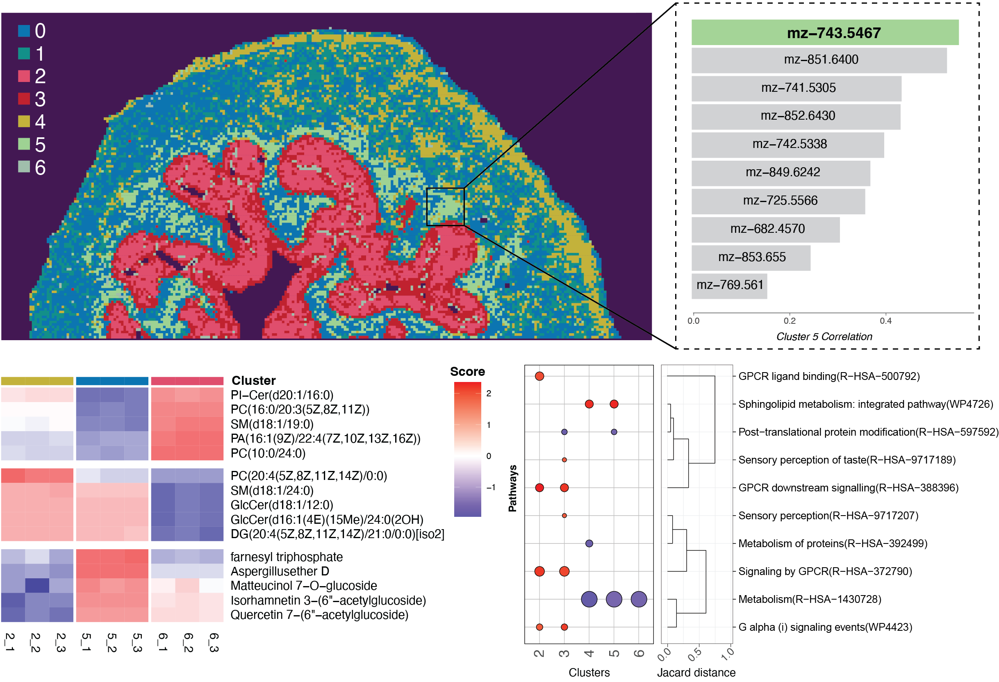
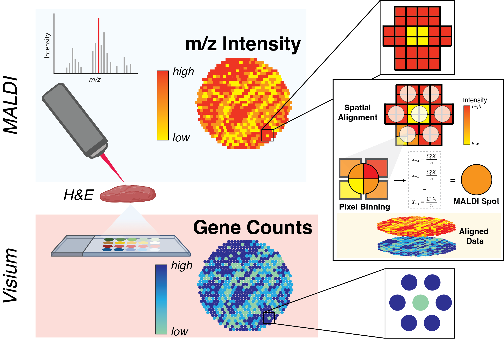
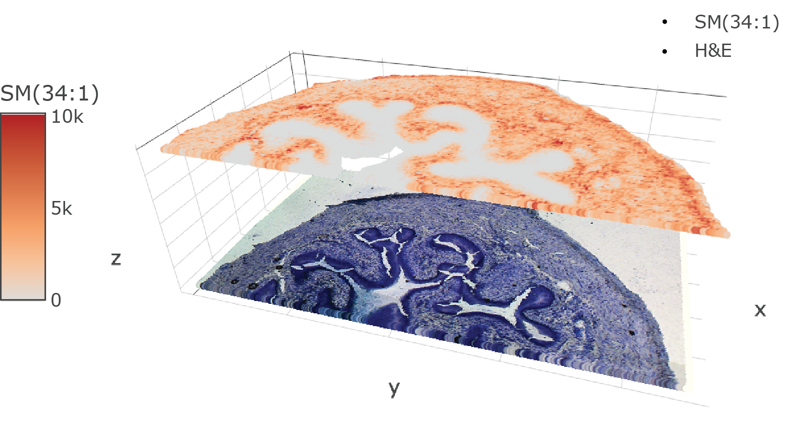

Listed below are a number of useful tutorials demonstrating how to use SpaMTP when analysing your spatial metabolomic datasets. For more documentation of each function used in these tutorials, please visit our Reference page.
Useful SpaMTP Vignettes
For a general introduction in importing data, annotating metabolites and running key analysis pipelines on your spatial metabolomic data, we suggest starting with the Spatial Metabolomic Analysis Tutorial. This vignette uses mouse bladder data and demonstrates how to perform general tasks such as plotting, subsetting, and manipulating SpaMTP Seurat objects. For those with paired multi-modal datasets, we suggest working through the Multi-Modal Integration Tutorial. Here, we provide methods to align your two datasets to the same coordinates, map spatial metabolomic pixels to spatial transcriptomic spots and then run various analysis using this integrated data.
|  |  |  |
| An introduction to analysing spatial metabolomic datasets using SpaMTP. | Align, map and integrate spatial metabolomic and transcriptomics datasets together using SpaMTP. | Examples of additional SpaMTP visualisation and analysis functions that are useful for SM analysis pipelines. |
| GO | GO | GO |
SpaMTP Public Datasets
To access and download all our datasets used in the vignettes you can vist the SpaMTP zenodo page.
Installation
You can install the current version of SpaMTP from GitHub with:
if (!require("devtools", quietly = TRUE))
install.packages("devtools")
devtools::install_github("GenomicsMachineLearning/SpaMTP")Installing with Apptainer
To download the image:
wget -c https://downloads.gmllab.com/SpaMTP/spamtp-1.1.sifVerify it download correctly:
wget -q -O - https://downloads.gmllab.com/SpaMTP/spamtp-1.1.sif.md5 | md5sum -c -Or to create an Apptainer image from scratch (you need the environment-linux.yml, dependencies.R and spamtp.def files):
apptainer build spamtp.sif spamtp.defInstalling with conda environment
Below is an example of how to set up SpaMTP using a conda environment:
conda create -n SpaMTP -c conda-forge r-base=4.3.3 r-essentials r-devtools r-cairo python=3.9 r-reticulate r-leiden r-imager r-magick r-hdf5r r-sf bioconda::bioconductor-ebimage bioconda::bioconductor-scater bioconda::bioconductor-dropletutils bioconda::bioconductor-fgsea bioconda::bioconductor-rgoslin bioconda::bioconductor-glmgampoi
conda activate SpaMTPWithin the SpaMTP environment open R and install SpaMTP.
#Install Seurat version 5.3.0
remotes::install_github("satijalab/seurat", "seurat5", quiet = FALSE)
#Install Cardinal
if (!require("BiocManager", quietly = TRUE))
install.packages("BiocManager")
BiocManager::install("Cardinal")
#Install SpaMTP
devtools::install_github("GenomicsMachineLearning/SpaMTP")Possible Installiation Errors
Cairo Failed to Install
checking if R was compiled with the RConn patch... no
checking for cairo.h... no
configure: error: Cannot find cairo.h! Please install cairo (http://www.cairographics.org/) and/or set CAIRO_CFLAGS/LIBS correspondingly.
ERROR: configuration failed for package ‘Cairo’Check these libraries exist:
conda install conda-forge::r-cairoThis should resolve any issues. Rerun:
BiocManager::install("scater")Cardinal Failed to Install
ERROR: dependency ‘EBImage’ is not available for package ‘Cardinal’
BiocManager::install("EBImage")
fftwtools.c:28:9: fatal error: fftw3.h: No such file or directory
28 | #include<fftw3.h>
| ^~~~~~~~~If EBImage failed to installed, it is most likely due to an issue with the installation of fftwtools.
Try:
conda config --add channels conda-forge
conda config --set channel_priority strict
conda install r-fftwtoolsElse try:
conda install bioconda::r-fftwtools
conda install conda-forge::fftwTry in R:
if (!require("BiocManager", quietly = TRUE)) #Check if BiocManager is installed
install.packages("BiocManager")
BiocManager::install("fftwtools")If none of the above methods resolve instiallation issues, install Cardinal directly through conda:
conda install bioconda::bioconductor-cardinal rgoslin Failed to Install
If rgoslin fails to install please head to their github. Alternative, you can try installing through BiocManager or mamba shown below:
BiocManager::install("rgoslin")or
mamba install bioconductor-rgoslinMatrix version incompatible with Seurat
If the Matrix package version installed is not compatible with Seurat then try installing a different version and re-installing Seurat
#Install Correct version of Matrix package
remotes::install_version("Matrix", version = "1.6-4", repos = "https://cran.r-project.org")
#Install Seurat version 5.1.0
install.packages("Seruat")For other issue please flag on github under Issues.